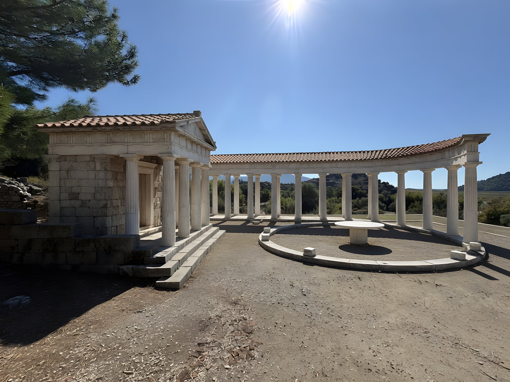
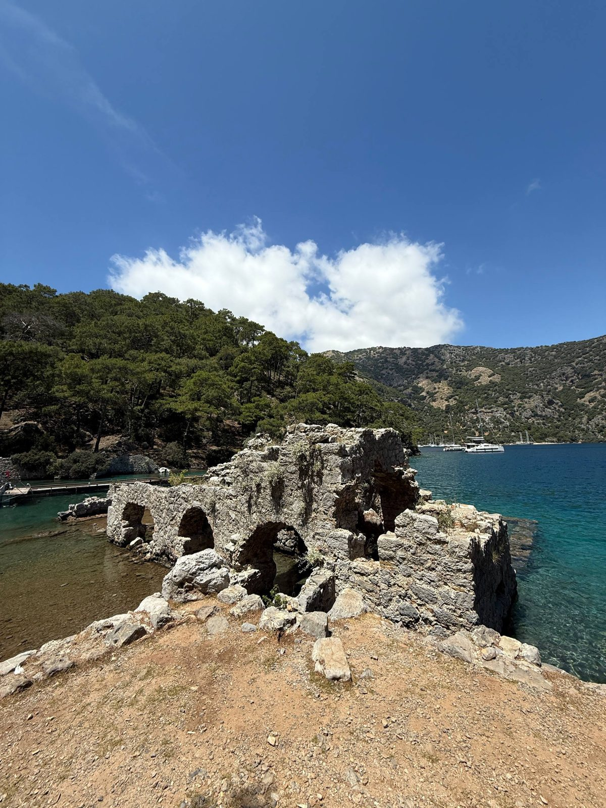
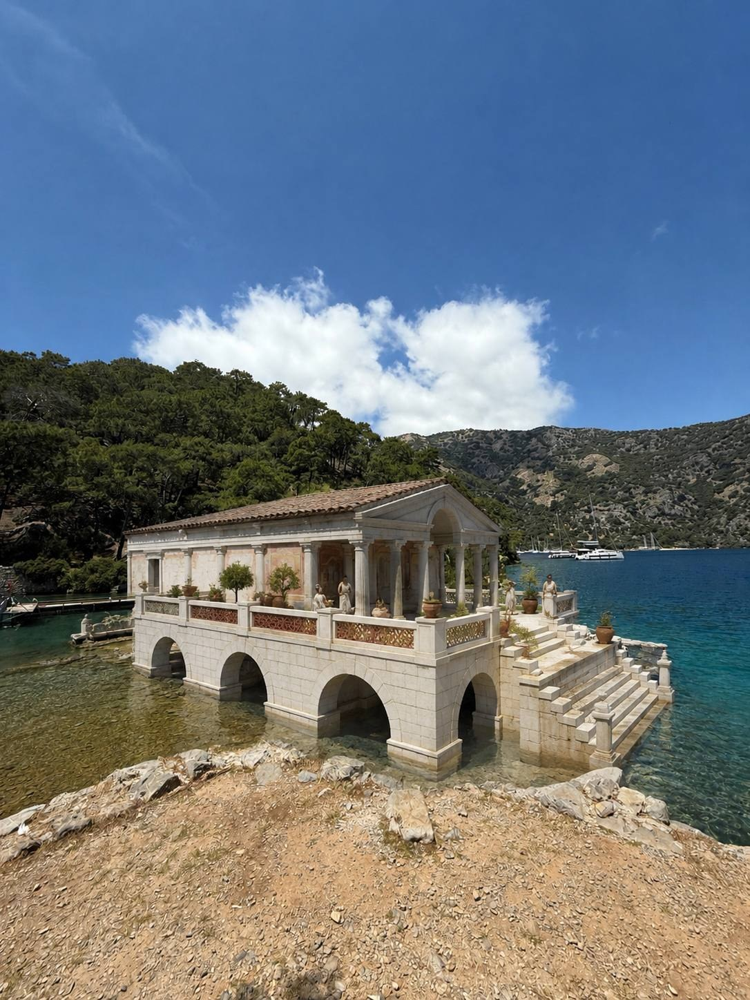

Террасный храм и круглая постройка
Слева на фото ступени храма с двумя барабанами колонн, справа кольцо блоков круглой постройки, в глубине остатки колоннады двора. Тяни ползунок: слева сейчас, справа тогда.


СейчасТогда- Храм построен во второй половине I в. до н. э. на искусственной террасе над гаванью и агорой. Дорический, в антах, 9,60 × 6,78 м.
- Двор 30,50 × 35,00 м был обрамлён колоннадой дорического ордера из песчаника.
- По надписи на барабане колонны храм посвящён Зевсу Сотеру.
- Круглая постройка стоит на оси храма: наружная колоннада, экседра и круглый алтарный стол на цилиндрическом основании. Входа у неё нет, поэтому её считают абатоном-герооном.
- Под центром, на 6,5 м ниже пола, стоит байтил: пирамидальный священный камень высотой 3,5 м. Его почитали с V в. до н. э. и чеканили на монетах Кавноса как символ Басилевса Кавния, бога-царя города.
- Апсида на юго-востоке осталась от трёхнефной церкви конца VI в.
Достроил храм на существующих ступенях, замкнул двор колоннадой на месте разбросанных барабанов и поставил на кольцо блоков открытую колоннаду без крыши с алтарём в центре, как на схеме с таблички. Сосна, солнце, холмы и земля площадки остались с фото.
Театр
Снято с верхнего ряда. Внизу орхестра и остатки сценического здания, справа два арочных прохода, в левом углу озеро Сюлюклю, бывшая гавань города.

 СейчасТогда
СейчасТогда
- Построен во II в. до н. э., крупно перестроен римлянами в I–II вв. н. э.
- Кавеа диаметром 73 м, больше полукруга: 33 ряда (18 нижних и 15 верхних), 9 клиньев, между ярусами проход шириной 1,74 м.
- Орхестра около 21 м, вместимость около 5 000 зрителей, материал местный известняк.
- Римский фасад сцены имел пять дверей и колонны на постаментах; 16 дорических колонн эллинистического проскения использовали повторно.
- Внутрь вели два сводчатых прохода. Театр смотрит на юго-запад, на город и дельту Дальяна.
- Озеро в кадре, Сюлюклю-гёль, было гаванью, вход в которую перекрывали цепью.
Как именно выглядел фасад сцены Кавноса, неизвестно: Grok нарисовал типичную двухъярусную римскую сцену с колоннами. Ряды, орхестра и арки стоят на своих местах с фото.
Вход в святилище Басилевса Кавния и Аполлона
Четыре мраморные колонны с архитравом над лестницей, слева руины арочной постройки, справа остатки стены. Табличка рядом описывает священный участок, в который этот вход ведёт.

 СейчасТогда
СейчасТогда
- Святилище было центром культа Басилевса Кавния, главного бога города. Только в эллинистический период его отдали Аполлону, до и после оно снова принадлежало Басилевсу Кавнию.
- С востока к нему примыкает террасный храм, с запада участки Артемиды Элевтерии и Афродиты Эвплойи, с юга гаванная агора, с севера пиршественное здание.
- С агорой святилище соединял ступенчатый монументальный вход с юга. На плане таблички он подписан как пропилон.
- Это был открытый храм под небом, куда во все эпохи приносили вотивные дары.
Четырёхколонная постройка с лестницей сопоставлена со ступенчатым входом по соседней табличке и её плану. Отдельным источником это сопоставление не подтверждено.
Эталон
Пара, по которой выставлен стандарт: ракурс, свет, вода и холмы сохранены, достроено только здание. Три пары выше сделаны по этому же образцу.


СейчасТогдаГоризонт, линия берега, яхты у дальнего берега и камни переднего плана совпадают с фото пиксель в пиксель. Здание выросло на собственных арках, а не на новом месте. Именно это требование записано в промпт для Кавноса.
Как сделано
Grok, инструмент image_edit, без ручной дорисовки.
Фото уменьшено до 2048 px по длинной стороне и отдано в image_edit с исходным соотношением сторон, 3:4 или 4:3.
Промпт начинается с запрета менять кадр: это правка фото, а не новая картинка; камера, фокусное, горизонт, небо, горы, деревья и передний план остаются на тех же пикселях; руины достраиваются на собственном фундаменте в том же масштабе; ничего не добавлять, ни людей, ни лодок, ни новой мостовой.
Сценарные промпты вида «покажи храм с людьми и кораблями» на тех же фото уводили камеру и добавляли лишнее, поэтому от них отказались.
Что именно достроить, взято с табличек у руин и из описаний театра: ордер, размеры, крыша, открытое кольцо колонн, число ярусов сцены.
По три попытки на фото. Совпадение рамки с оригиналом измерено корреляцией контуров фона, лучший вариант показан первым, остальные два доступны переключателем.
Результат 864 × 1152 увеличен вдвое Real-ESRGAN, чтобы не плыл на большом экране.
Это художественная реконструкция нейросети по описаниям, а не археологическая модель. Размеры, ордер и состав построек соответствуют табличкам, а детали фасадов, черепица и капители нарисованы по аналогии с другими античными зданиями.
Три фото с места, две таблички, двенадцать прогонов Grok. Полноразмерные файлы открываются по ссылкам под каждой парой.